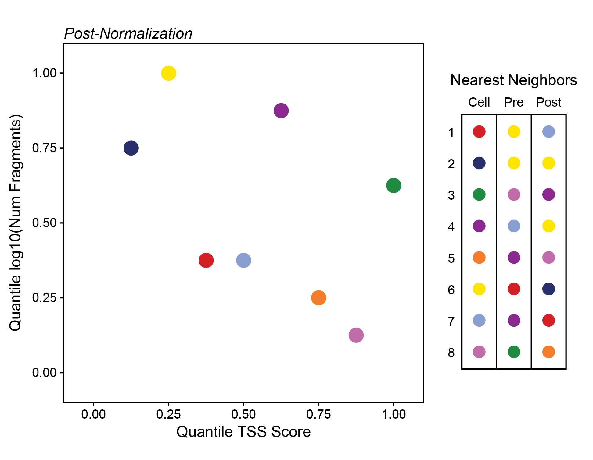

Marker Feature Identification
markerFeatures.RmdMarker Features
An alternative less-supervised method for elucidation of cluster-specifc biology is the identification of features that are highly specific to the given cell group (or a small number of cell groups). Here, a feature could be a single regulatory element or it could be a gene. ArchR does this using the markerFeatures() function which can take as input any matrix via the useMatrix parameter and it identifies features unique to the groups indicated by the groupBy parameter (default is “Clusters”). If the useMatrix parameter is set to “GeneScoreMatrix”, then the function will identify the genes that appear to be uniquely active in each cell type. This provides an unbiased way of seeing which genes are predicted to be active in each cluster and can aid in cluster annotation.
As mentioned above, the same markerFeatures() function can be used with any matrix stored in the ArrowFiles to identify features that are specific to certain cell groups. This is accomplished via the useMatrix parameter. For example, useMatrix = "TileMatrix" would identify genomic regions that are highly specific to a certain cell group and useMatrix = "PeakMatrix" would identify peaks that are highly specific to a certain cell group.
How does this happen?
This process of marker feature identification hinges on the selection of a group of bias-matched background cells for each cell group. Across all features, each cell group is compared to its own background group of cells to determine if the given cell group has significantly higher accessibility. Then, ArchR looks for features that are uniquely significantly accessible in a single cell group (or a small number of cell groups).

The selection of these background cell groups is critical to the success of this process and is performed across the multidimensional space provided by the user via the bias argument to markerFeatures(). For each cell in the cell group, ArchR finds the nearest neighbor cell across the provided multidimensional space that is not a member of the given cell group and adds it to the background group of cells. In this way, ArchR creates a group of bias-matched cells that is as similar as possible to the given cell group, thus enabling a more robust determination of significance even if the group of cells is small.
The way ArchR does this is by taking all of the dimensions provided via the bias parameter and quantile normalizing their values to distribute the variance of each dimension across the same relative scale. Taking a toy example, if the parameters TSS and log10(Num Fragments) were provided to bias, the pre-quantile normalized values might look like this:

Here, the relative variance across the y-axis is very small compared to the variance across the x-axis. If we normalize these axes so that their values range from 0 to 1 instead, we make the relative variance much more equal. Importantly, we also change the nearest neighbors dramatically.

ArchR normalizes all of the dimensions and uses euclidean distance in this normalized multidimensional space to find the nearest neighbors. Using real data from QQQ, this process can identify QQQ.
[INSERT REAL DATA FIGURE HERE (JEFF)]